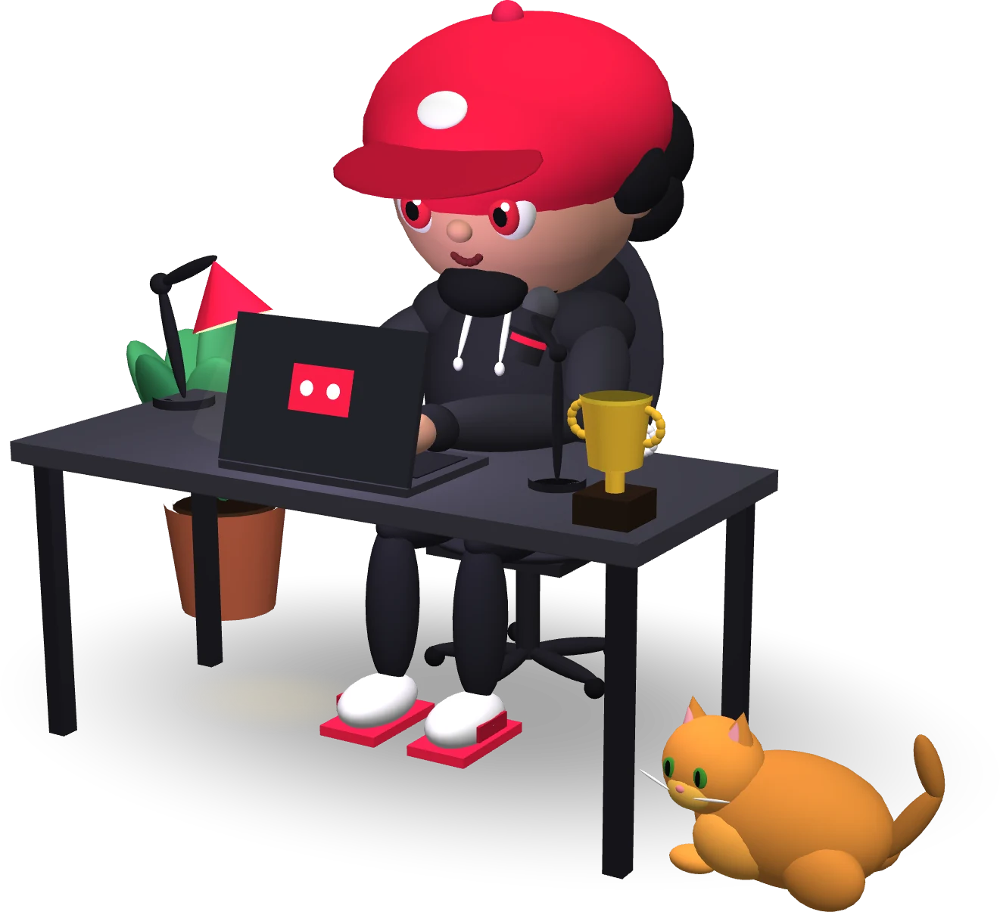
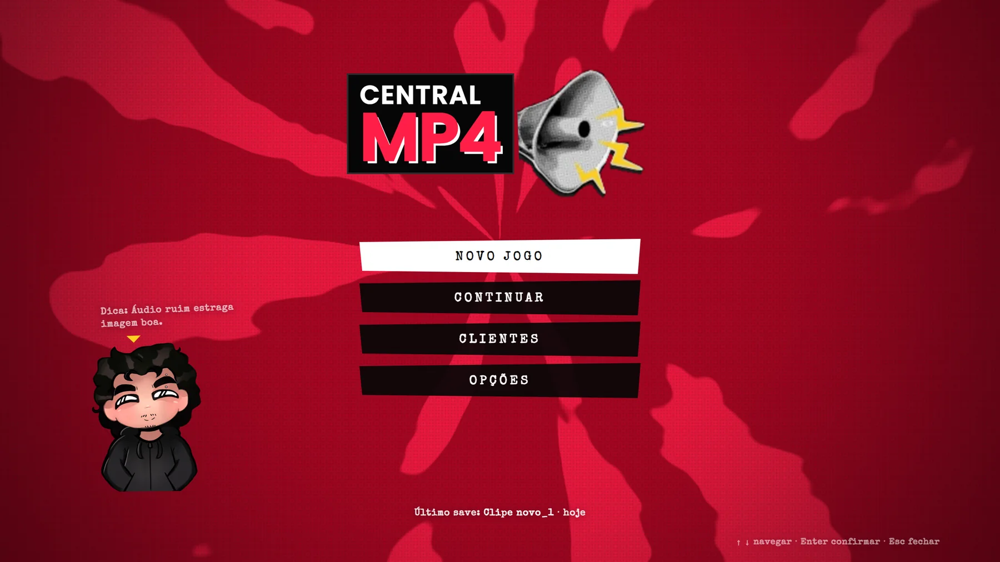
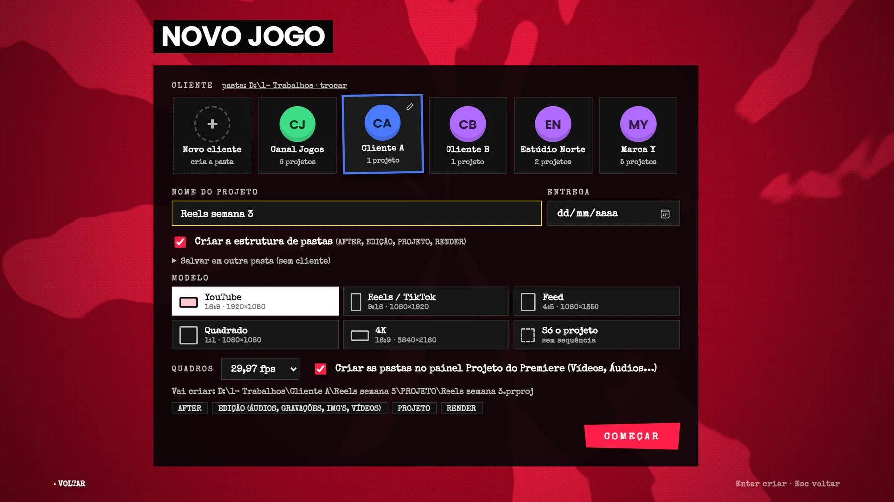
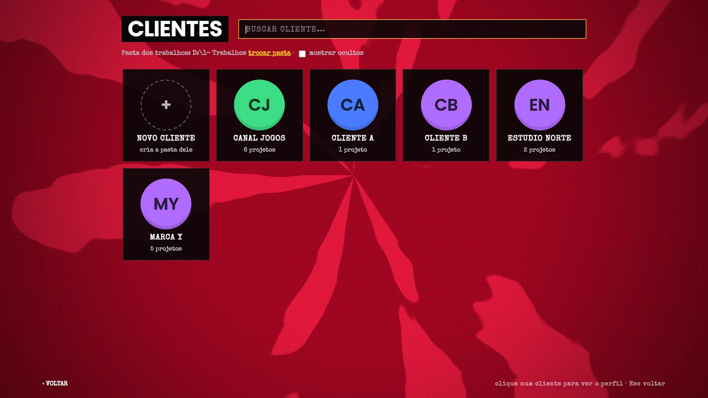
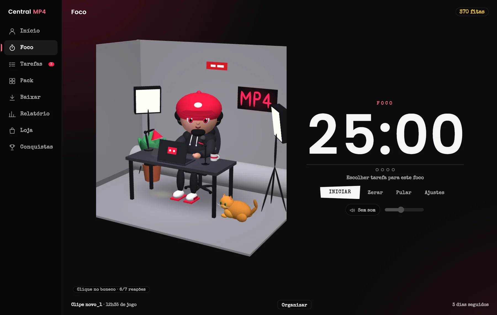

Atualiza sozinho
Quando sai versão nova, o painel avisa. Um clique baixa, confere e instala.
Plugin gratuito para Adobe Premiere Pro
Um menu de abertura para começar e continuar projetos, pastas de cliente criadas sozinhas, um painel com pomodoro, tarefas, biblioteca de efeitos, downloader e relatório de horas. E um boneco que edita junto com você.

Menu de abertura
A intro da MP4 Studio toca, o menu entra por cima da tela inicial e você escolhe: projeto novo, continuar de onde parou, ver seus clientes ou mexer nas opções. Teclado ou mouse.

Novo jogo
Escolhe o cliente, escreve o nome do projeto e a Central monta a pasta inteira no lugar certo, salva o projeto dentro dela e já abre com a sequência no formato que você precisa.


O painel
O painel Central MP4 fica encaixado no Premiere, ao lado do seu projeto.

Nos detalhes
Quando sai versão nova, o painel avisa. Um clique baixa, confere e instala.
O mesmo plugin nos dois sistemas, com instalador próprio para cada um.
Instala só na sua pasta de usuário. Seus dados ficam no seu computador.
O foco pausa sozinho se ninguém mexe no mouse nem na timeline, e volta quando você volta.
Pastas e miniaturas ficam guardadas: a segunda vez abre na hora, mesmo no Google Drive.
Bronze, prata, ouro e platina. Missões do dia, desafios da semana e itens exclusivos.
Novidades
Relatório novo (mapa de calor, gráficos, meta da semana e clientes com foto), Pack bem mais rápido (lembra as pastas e as miniaturas) e giro do boneco mais liso. Menu com a cara nova da Central MP4 (logo, emojis e a tela Clientes), intro da MP4 Studio sempre antes do menu. Novo jogo com clientes que já cria a pasta do projeto com toda a estrutura. Também: desafios da semana com itens exclusivos, salas novas para o boneco, reações ao clicar nele, forma de onda nos sons do Pack e etiquetas próprias.
Versão para Mac. No Windows nada muda: só ajustes por dentro para o mesmo plugin rodar nos dois sistemas.
Loja com provador fixo ao lado (a câmera vai até o item), roupas novas, itens 3D refeitos, Início redesenhado, Pack com miniaturas ou lista e mini relógio no pé da barra lateral.
Baú do dia, cartão de perfil para postar, tarefas repaginadas, favoritos e recentes no Pack, baixar só a miniatura e itens de Natal na loja.
Conquistas, relatório de horas, missões do dia, som ambiente, fila no downloader, atualização automática, loja com 26 itens e 6 pets.
Instalar
O instalador não pede senha de administrador. Ele copia o plugin para a sua pasta de usuário e libera o Premiere para carregar extensões de fora da loja da Adobe.
Dúvidas
Sim. As "fitas" da loja são ganhas usando o plugin (focos, tarefas, missões, baú do dia e conquistas). Não tem compra de verdade.
Premiere Pro 2021 ou mais novo, no Windows 10 e 11 e no macOS 11 ou mais novo.
Feche o Premiere, rode o instalador de novo (ele refaz a liberação de extensões) e abra o Premiere outra vez.
A aba Pack navega pela pasta do Essential Pack no seu computador: overlays, sons, músicas, memes e modelos, com busca, prévia e arrastar para a timeline. Os arquivos do pack não vêm no plugin.
No seu computador. No Windows em %APPDATA%\renanmp4-menu, no Mac em ~/Library/Application Support/renanmp4-menu. Atualizar não apaga nada.
No Windows, abra o instalador e clique em REMOVER. No Mac, rode o Desinstalar Central MP4 que vem no .zip.

Grátis, para Windows e Mac. Instala em um minuto e atualiza sozinho.